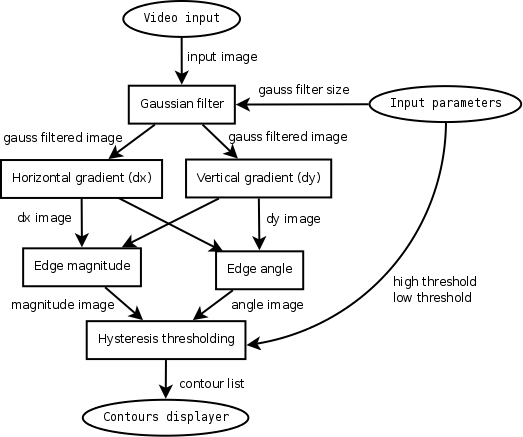
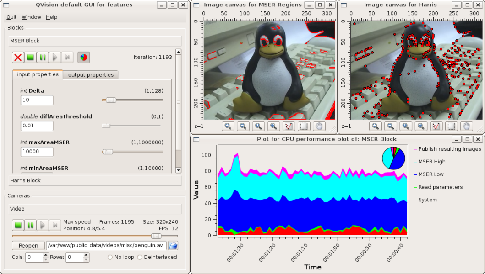
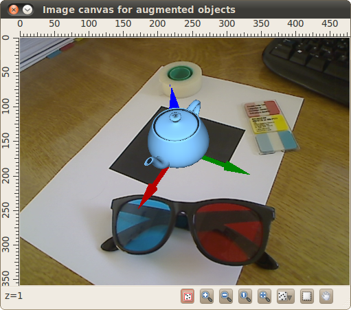
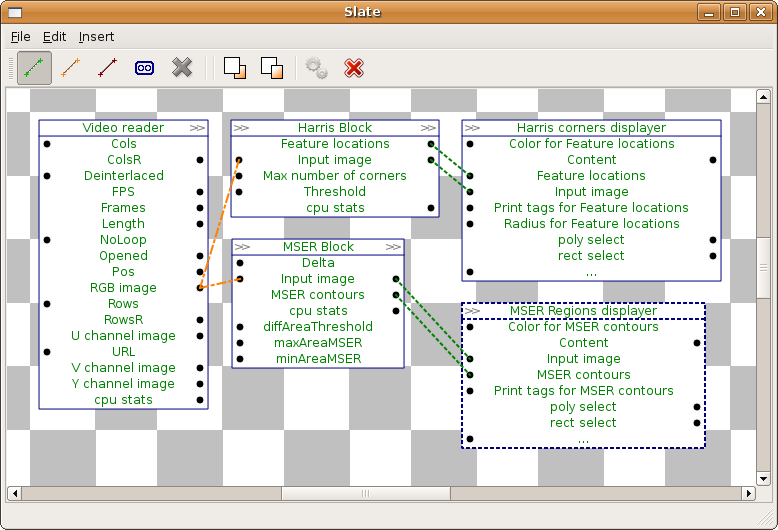

PARP Research Group
PARP Research Group
| PARP Research Group |
Universidad de Murcia |
QVision overviewThe QVision can be seen in two ways. First, as a computer vision and scientific computing library; second, as an application development and design tool. Regarding the first perspective, the QVision is built upon the Qt library, which offers extensive functionality for file management, networking, graphical widgets, high level containers (such as lists, hash tables, etc...) and programming tools (such as qmake, the Qt Assistant, or the Qt Creator) that help the developer to create new applications. The QVision extends the Qt library with a set of data structures commonly used in the fields of computer vision and scientific computing. Some of them are:
and so on. The QVision provides comprehensive functionality to operate with these types. It offers matrix decomposition functions (see the Matrix Algebra module), image feature detection functions (see module Image processing), projective geometry and 3D reconstruction functions (see Projective Geometry module), amongst others. This functionality will be continuously growing with contributions from several sources. To provide fully comprehensive image processing, scientific calculus, and video input/output functionality, the QVision can easily inter-operate with several third-party libraries and applications. A set of wrapper functions are provided to use the classes of the QVision with functionality from those libraries, Also conversion operators are generally included to easily convert QVision data types from and to data types from those libraries. The QVision also offers several tools to the developer for application prototyping. It includes tools for reusable block oriented application development, which the developer can use to rapidly and easily create complex applications featuring data processing pipeline structures. Interoperability with other librariesThe QVision can be used in conjunction with several third-party libraries, and contains functionality to interact with them. The QVision must be configured to use each one of them, prior to its compilation. These third-party libraries are:
Also, the QVision includes several classes and functions to use the widely known MPlayer as a back-end application. This means that any QVision application can read from a wide set of video and image source types, like web-cams, remote streams, and many video and image formats and types using the MPlayer. The QVision functionality provided to inter-operate with the MPlayer will launch the necessary instances of the MPlayer application, and will communicate with them to obtain the images or input video frames in the format required by the QVision application. Check the documentation of the module MPlayer based image and video input/output for a list of these functions and classes. QVision application development toolsSignal processing tasks are common in computer vision and scientific computing. Characteristic processing structures appear in these algorithms, where the data flows through a pipeline of several stages from the input of the application to the output (graphical, user interface, to disk, etc...). An example is the well known Canny edge detector. The following graph depicts the processing stages it performs, from the input images, to the resulting borders detected at them:

Square elements in the graph represent data processing blocks. Round elements represent data or parameter input/output in the data path. The arrows are directed data links, which connect stages that produce certain data with the stages that process it. The QVision provides a design tool to help in the creation of these structures, and to exploit their computational and algorithmic advantages. Data processing blocks are modeled as objects that share data through links between them. Some of the advantages of using this block design for application creation are the following:
Besides these advantages, the library contains graphical widgets to inspect and modify the behavior and structure of these processing data-paths at execution time. The following is a snapshot of a typical QVision application, built using some of the block inspector widgets provided by the library:

With these widgets the user of the application can stop, resume and execute step by step the processing of each input image frame. The user can also modify the parameters and behavior of the algorithms implemented in the application at execution time, which is specially interesting when tuning threshold variables, or designing new algorithms. Also, some of these widgets can inspect the performance and outputs of the intermediate and final blocks in the data-path, such as the resulting images, features detected, and so on. The QVision can be used to create augmented reality applications:

You can check the class QVImageCanvas for further info about this. The QVision also provides a special tool, named the Designer. With this tool, the developer can inspect and modify the structure of the data-path at execution time, making easy to perform rapid application development. The Designer displays a slate window, where the user can view the data-path structure, and, add or delete nodes and data links between them while the application is still running. An example of this slate window is the following:

For further info about the Designer, check the section The Designer GUI. Section Creating the first block-oriented application of the manual starts with the basics of block programming. Further sections extend the details and functionality of this approach to QVision application development. |